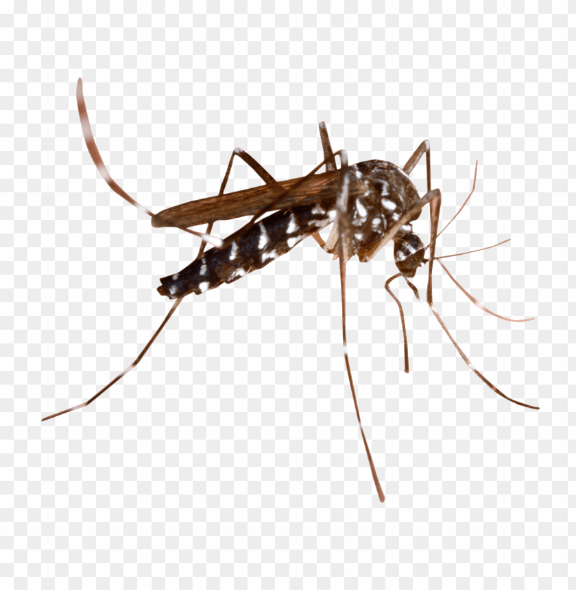
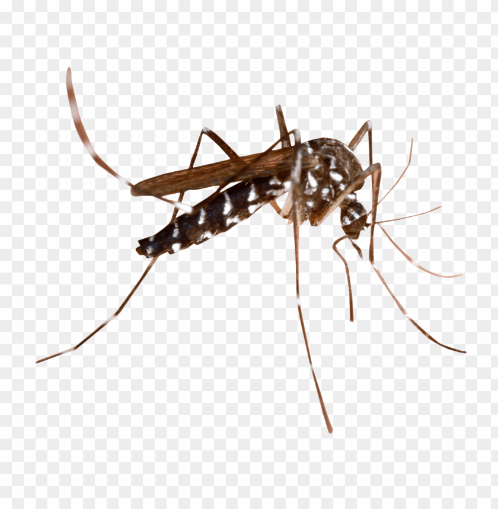

بسم الله الرحمن الرحيم
Welche ist Meisterwerk? Warum?

Welche ist höher als künstlich? Weshalb?
 

Ist es möglich, dass Ebb und Flut könnten die Erde zerstören? Wieso?


Willkommen in unserem SimpleNote-Kanal . Bleibe auf dem Laufenden und erfahre mehr:

Sag ein Wort und finde es in pirlantaoku.com in deinem Telefon, wähl eine Abschnitt und lies!

Lass uns eine kurze Text von Pırlanta auf Deutsch übersetzen!

Kahoot Zeit!

Wie ist effektive Suche zu machen?

Namaz Übung! Lies laut vor!
Zeit, ein Gebet auswendig zu lernen! Zusammen und 7 Mal in der Reihe laut vorlesen!
رَبِّ اغْفِرْ وَارْحَمْ وَ اَنْتَ خَيْرُ الرَّاحِمِينَ
Lass uns heute, was wir gefühlen haben, was wir verstanden haben, was wir gedachten haben, was wir gelernt haben, als einen kurzen Text in der Blog auf Deutsch oder auf Türkisch schreiben!
والحمد لله رب العالمين